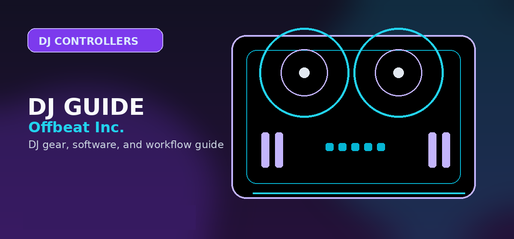

Pioneer DDJ-400 vs DDJ-FLX4: Which to Buy in 2026?
Head-to-head: Pioneer DDJ-400 vs DDJ-FLX4 in 2026. Features, jog size, latency, software bundles and value comparison for beginner DJs.

Disclosure: This page uses affiliate links. We may earn a commission at no extra cost to you. Full disclosure →
Introduction
If you're shopping for an entry-level DJ controller in 2026, the Pioneer DDJ-400 and DDJ-FLX4 remain two of the most talked-about options. Both target beginner to hobbyist DJs, but they bring different strengths: the DDJ-400 focuses on the classic Rekordbox-style layout and performance workflow, while the DDJ-FLX4 emphasizes cross-platform flexibility and fresh creative features. This comparison covers build, software compatibility, performance features, sound, and who should buy each model.
Quick Verdict
Choose the DDJ-FLX4 for multi-platform compatibility (Rekordbox, Serato), streaming-friendly features, and a modern, portable design. It's the recommended choice for most new buyers in 2026, offering excellent value at its price point.
Consider a used DDJ-400 if you are strictly focused on learning Rekordbox's club-standard workflow and can find one at a significantly lower price (around $150-$200). It's a capable controller but is discontinued and lacks the FLX4's software flexibility.
Pioneer DDJ-FLX4: The Modern Beginner's Choice
The FLX4 wins for its broad software support, USB-C connectivity, and excellent value. It's the best option for beginners who want flexibility and future-proofing.
Pioneer DDJ-400
Excellent for Rekordbox users and learning club-style workflow.
Pioneer DDJ-FLX4
Superior for multi-platform users, streamers, and modern features.
Build Quality and Layout
DDJ-400: Familiar, compact, club-style layout
The DDJ-400 mimics the layout of Pioneer’s professional club gear in a compact form. Jog wheels are slightly smaller than full-size CDJ platters but provide good tactile feedback for beatmatching practice. All main controls — EQs, filters, transport, and looping — sit in intuitive positions which helps bridge the learning curve toward club setups.
DDJ-FLX4: Portable, modern, and approachable
The DDJ-FLX4 is designed for portability and modern workflows. It often features lightweight construction, larger performance pads relative to the overall footprint, and simplified controls to get beginners mixing quickly. The FLX4 focuses on usability across multiple DJ apps and includes features tuned for streaming and social content creation.
Software Compatibility and Workflow
The biggest differentiator between these two controllers is software flexibility.
- Pioneer DDJ-400: Primarily designed for Rekordbox DJ. Rekordbox offers an industry-standard workflow, library management, and practice tools that mirror club systems. If your goal is to eventually play club rigs or use Rekordbox export, the DDJ-400 is the most natural stepping stone.
- DDJ-FLX4: Promoted as a cross-platform controller, it supports Rekordbox, Serato DJ Lite (and Pro), and djay. The versatility makes it appealing for creators who switch between software or want features optimized for social streaming and mobile DJing.
Performance Features and Creative Tools
Both models include performance pads, effects, and assist features, but they differ in emphasis.
- DDJ-400: Emphasizes classic professional effects and beat-sync tools found in Rekordbox; good for learning manual beatmatching thanks to its club-like layout.
- DDJ-FLX4: Includes more creative mixing assists and crossfader-friendly designs for quick mashups and short-form content; integrates with vocal processing and loop-sampling features in some software bundles, and a Smart Fader feature for smoother transitions.
Sound and Connectivity
Audio quality is broadly comparable for home and small-event use. Expect clear codec playback, line outputs for powered speakers, and a mic input for announcements or auditions. The DDJ-FLX4 sometimes bundles wider connectivity aimed at streamers (USB-C, direct streaming mix outputs, Bluetooth MIDI), while the DDJ-400 focuses on straightforward stereo outputs and a booth/line orientation in the Rekordbox ecosystem.
Comparison Table
Which Should You Choose? (Use Cases)
Bottom Line
The Pioneer DDJ-FLX4 is the superior choice for most beginner DJs in 2026. Its expanded software compatibility, modern connectivity (USB-C), and streamer-friendly features offer better long-term value than the discontinued DDJ-400. While the DDJ-400 remains a good option for dedicated Rekordbox users if found cheaply on the used market, the FLX4 provides more flexibility and active support for a similar new price.
Frequently Asked Questions
Pioneer DDJ-400 vs DDJ-FLX4 — which should I buy?
The DDJ-FLX4 ($349) is the recommended choice for most buyers. It replaced the DDJ-400 with 4-channel support, multi-software compatibility (Rekordbox, Serato, djay), and improved build quality at a similar price point.
Is the DDJ-400 still worth buying?
The DDJ-400 is discontinued but still available used at $150–$200. At that price it's excellent value. New buyers should choose the DDJ-FLX4 for better software compatibility and active support.
Does the DDJ-FLX4 work with Serato?
Yes. The DDJ-FLX4 is officially supported by Serato DJ Lite (free) and Serato DJ Pro. Unlike the DDJ-400 (Rekordbox-only), the FLX4 works natively with multiple DJ platforms.
Pioneer DDJ-FLX4 vs FLX6 — what is the difference?
The FLX6 is a 4-channel controller with larger jog wheels, a dedicated mic input, and improved build. The FLX4 is the 2-channel entry point. Most beginners don't need the FLX6's extra channels immediately.
Does the DDJ-400 come with free software?
Yes. The DDJ-400 included a free Rekordbox license. The DDJ-FLX4 includes Rekordbox plus Serato DJ Lite — more software flexibility.